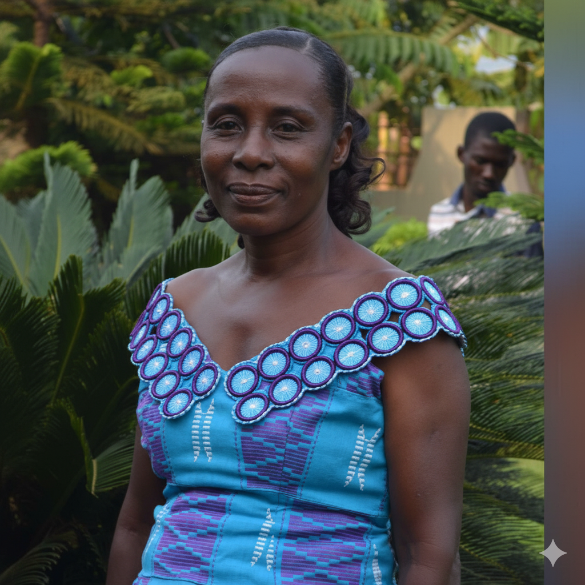

Tributes
“It is required in stewards that a man be found faithful” (1 Corinthians 4:2).
The Koforidua Central SDA Church gives glory to God for the life of our dear father and brother, Opanin Emmanuel Osei Owusu, affectionately known as Agya Wusu. Above all else, his life was marked by unwavering faithfulness to God and His church. From the day of his baptism on 9th November 1968 by Pastor Samuel Appiah Dankwah at Techiman, he remained steadfast in the Lord. For over five decades, he served this church with humility, loyalty, and unshakable commitment. Whether as a deacon or in the Treasury Department, he gave himself fully to God’s work. His honesty and diligence strengthened the financial life of the church, and his dedication helped lay the foundations of our welfare system. Like Nehemiah of old, he was a man who could be entrusted with sacred responsibility, and he carried out every duty faithfully and without blemish. He did not serve for recognition or praise, but for the joy of the Master. Truly, he lived out the words of Paul: “I have fought the good fight, I have finished the race, I have kept the faith” (2 Timothy 4:7). His faithfulness was not in words but in action, not in appearance but in devotion. It was therefore fitting that this church honored him with a great citation in his lifetime—a testimony that his labor was not in vain. Soon after this moment of joy, the Lord called His servant to rest. How blessed that his life ended as it was lived: in faith, in service, and in loyalty to God. As a church, we affirm with hope: “Blessed are the dead who die in the Lord… they rest from their labor, and their works follow them” (Revelation 14:13). Indeed, Opanin Wusu’s works follow him, and his example of faithfulness will continue to inspire generations yet to come. Farewell, good and faithful servant. Until the resurrection morning, rest in peace, Opanin Emmanuel Osei Owusu.
We stand today with a deep sense of gratitude for the precious, God-given life of our grandfather, Opanyin Emmanuel Osei Owusu—the man we affectionately called Dada. Dada was a man whose strength wasn't loud; it was deep and quiet. He embodied the best of human qualities: humble, peaceful, and overflowing with unconditional love. He never sought the spotlight, yet his life was a light that profoundly touched every one of us. His gentle manner was our most enduring lesson in living a life marked by kindness, unwavering patience, and deep faith. Da was, quite simply, our anchor. His presence was a constant, comforting assurance throughout our lives. We grew up shielded by his prayers, guided by his wise words, and surrounded by his boundless love. No matter the challenge or the celebration, Da was our steady hand, our safe harbor, and a comforting presence in every season. We are eternally thankful for every blessing his exemplary life brought to ours. We will forever carry the memory of his remarkable compassion, particularly the selfless, loving care he provided for our dear cousin, Dennis, before his passing. This act of devotion revealed the true depth of his selfless nature and the incredible capacity of his heart. It was a powerful, living example of what it means to love and serve truly. Though our hearts ache because Da is no longer physically with us, his spirit is an indelible part of who we are. It lives on in the values he instilled, the lessons he left behind, and the rich tapestry of our shared memories. His prayers, like a lingering echo, continue to resonate in our hearts, and his profound love will forever be our guiding star. Rest in perfect peace, Da. You fought the good fight and ran your race with grace. We love you more than words can say and promise to honor your memory always.
We wish you were alive to hear these testaments. The question is, what would it profit the dead when we shower praises upon him? We know this will not impact your life; we should have sung your praises while you were alive. However, we understand that we are singing and reciting your praises and testament today to edify ourselves, draw strength from your legacy, and find inspiration in your remarkable life, for "a wise man's heart discerns both time and judgment" (Ecclesiastes 8:5). Agya Owusu, your legacy lives on through the countless lives you touched and has become a yardstick and testament for us today. Your warm smile and open door welcomed everyone, creating a sense of belonging and love that transcended family ties. Your simplicity and humility inspired us to live life with purpose and kindness, showing us that true greatness lies in serving others. We remember your gentle guidance, your listening ear, and your generous heart, which always seemed to find a way to make everyone feel seen and heard. You showed us that true strength lies in compassion, calmness, simplicity, patience, empathy, and understanding. You never rushed to talk; instead, you listened more and spoke less, which made you a repository of knowledge and wisdom. As the African proverb goes, "A tree is reflected by its fruit," and your children, thus, our wives and husbands, have borne fruit in their lives, reflecting the values and character you instilled in them. Your fairness and impartiality were remarkable; you never took sides or favored one over the other, always seeking to understand each perspective. Your wisdom and balanced perspective helped us navigate family and marriage conflicts, and we deeply respect your approach, which was always guided by a deep sense of justice and compassion. Though you are gone, your humane, resolute, and finest approach to resolving family and marriage conflicts lingers on, a testament to the enduring power of your legacy. Indeed, you may be gone, but you will live on for years to come, in the hearts of those who knew you and in the lessons you taught us. As another African proverb says, "When the parent's house is clean, the children's house will be clean," and your legacy has set a high standard for us to follow. We testify that your presence in our lives as in-laws brought a wave of rich and memorable experiences. Yet, one in particular stands out, shared by one of us, Mr. Ayisi Gyekye. He recalls: “As I was about to marry Rachael, I recalled the wise saying, "When you are going into marriage, ask." This resonated deeply with me, and I realized that your family's values and character were a significant part of what I was marrying into. When I met a man who congratulated me on my upcoming wedding and asked about my bride-to-be's family, I mentioned your name, and his face lit up with delight. "You're lucky," he exclaimed, his happiness stemming from the knowledge that I was marrying into a household renowned for its warmth, peace, good moral values, and integrity.” Agya Owusu, today the good moral precedence you set up is telling us that parents who, because of their moral decadence and bad parenting style, are casting a snare on their children's marriage and even preventing others from marrying from their family, should change the narrative from attributing their predicament to negative influences and rather consider their own actions. As the proverb goes, "A child who is not taught how to respect others will not respect others." Indeed, you taught your children and others the importance of respect, kindness, and compassion. As we bid you farewell, dear father-in-law, we take comfort in the promise of a future reunion. And as the Bible says, 'For the trumpet will sound, and the dead will be raised imperishable, and we will be changed' (1 Corinthians 15:52). Until then, rest well, knowing that your legacy lives on in our hearts and will continue to inspire us to live lives of love, kindness, and compassion. May your memory be a blessing to us, and may we one day reunite in the presence of the 'Obolebole' (Almighty), where love and joy will be forever. When a great tree falls, its seeds remain, and so do the countless lives you've touched and the sweet memories we've shared. Amen!
Brother Owusu is the name we used to call him. It is indeed a Herculean task to find words to describe his nature, for we may understate his virtues. In fact, on the ladder of perfection, no human is perfect, but Mr. Owusu could be considered a superhuman being under any critical examination of his personality. Apart from being a quiet man, he was a very respectful person—kindhearted and humble—and exhibited a high degree of humility toward all manner of people. Being born into a family of Adventists, he did well to walk in the path of righteousness, exhibiting Christ-like character, avoiding all forms of social vices, and tempting situations that could lure him to the devil’s bait. His love was not only to the family but extended to every human being, regardless of his or her status. Touching on his spiritual life, the fruits of patience and humbleness could be clearly seen in him. He could be described as a person who could walk on eggs and not cause a break. He loved every member of the family dearly. He was fair and firm and avoided selective justice in dealing with issues. The greatest challenge of the family was how long such a legend would live to serve as a model for future generations to emulate. The death of our brother has created a big vacuum that might be extremely difficult to fill. It is our hope that the Good Lord would do that for us. Our beloved and good brother, we wish you a peaceful and perfect rest in our Lord. Brother Owusu, Nante yie!
We gather today not only to mourn a loss but to celebrate the life of our father. A life marked not by grand titles or worldly accolades, but by quiet, relentless strength. Though words can never fully capture who he was or the depth of our loss, we will try — because he deserves to be remembered and honored. Agya Wusu, as he was affectionately called, was a man of modest beginnings, whose formal education may have stopped early, but whose schooling in resilience, discipline, and selflessness was lifelong. With calloused hands and unwavering determination, he shaped a future far brighter than the one handed to him. No hardship was too heavy. No sacrifice was too great. He carried them all on his back if it meant his children could walk a smoother path. He worked through storms, through droughts, through hardship — pushing past pain and exhaustion, driven by a dream he held not for himself, but for us, so that we, his children, would never have to carry the same burden. Because to him, our future was everything. No matter how little was in his pocket, he made sure there was food on the table, that there were shoes on our feet, and love in our home. There was no sacrifice too great, no need of ours too small. Agya Wusu didn’t read from textbooks, yet he taught us lessons we’ll never forget:● That integrity matters more than recognition
● That consistency is more powerful than brilliance
● And that love—real love—is shown in action, not words
He was the kind of man who didn’t speak of love often, but showed it every single day. He showed his love in the cracked hands that built our lives. He showed his love in the tired smile he wore after a long day in the field. In this way, he stood as both father and provider, never asking for thanks and never expecting praise. To many, he may have seemed an ordinary man. But to us — he was a giant. A hero. Our foundation. As we say goodbye, our hearts are heavy, but they are also full. Our hearts are full of the love he gave us, full of the lessons he taught us, our hearts are full of gratitude for the life he lived. Rest well, Daddy. Your work here is done. You may not have worn titles or earned degrees, but in our eyes, you were the greatest teacher, the strongest protector, and the kindest soul we’ve ever known. The Lord has called home a faithful servant. Dad’s journey on earth is complete, but his spirit rejoices in the presence of his Creator. Though his voice is no longer heard, the lessons he taught and the love he gave remain etched in our hearts. We will carry your legacy with pride. We will walk the paths you cleared for us. And we will honor you not only in memory, but in the way we live, in what we give, and in how we love. We grieve, but not without hope, for we know we will see him again in glory. Thank you.
Ao, Kofi Wusu… hmm. My dear husband, my companion, my everything — how can I put into words the pain of losing you? Each day without you feels empty, each night unbearably long. You and I shared everything — our joys, our struggles, our laughter, and our faith. You were my partner in all things, and together we built a life of love and devotion. Now that all the children are married and living in their own homes, it was just the two of us left in this house — sharing laughter, stories, and companionship every day. And now, you too have gone, leaving me all alone. Who will I have conversations with when everyone is away? How could you not tell me it was time? Ah, death is such a cruel visitor. Indeed, Ecclesiastes was absolutely right: “Two are better than one, because they have a good reward for their labor. For if they fall, one will lift up his companion.” You lifted me up countless times, and walked faithfully by my side through every season of life. Even our neighbors knew how inseparable we were. They never saw one without the other — especially on Sabbath mornings, when we would step out together, dressed and ready for church. That picture of unity, of love, of companionship, is broken, and I feel the emptiness every day. You lived your life in sacrifice, always putting your family first. You worked hard, denied yourself many comforts, and carried heavy burdens just so your wife and children would never lack. Your love was not only spoken but shown in the sacrifices you made daily. For that, I thank you — and so do the children. We are forever grateful. You were my rock, my life partner, my greatest blessing under the sun. You loved me with tenderness, cared for me with devotion, and honored me in all things. Truly, you were not only a faithful servant of God but also a faithful husband to me. What more can I say? Death has separated us for a while, but it has not silenced my love for you. That love will remain with me until the day Christ calls us to rise, when we shall meet again and never part. Sleep well, my dearest. Rest in the arms of the Lord you served so faithfully.

Mrs Magaret Adjare Owusu